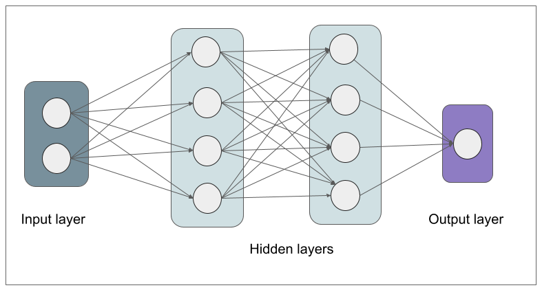

Transformer is a neural network architecture that was invented in 2017 in the famous paper “Attention is all you need”(Vaswani, 2017). Transformer is one of the biggest inventions in deep learning and probably in computer science as a whole. It was initially introduced for neural machine translation(NLP task that involves translating one language to another) but it has became a general-purpose architecture that doesn’t work only in NLP, but in other modalities as well.
Here is a rough outline of this article.
- Neural Networks Before Transformers
- Transformer Architecture
- Encoder and Decoder
- Attention
- Attention Inputs: Queries, Keys, Values
- Multi-Head Attention
- Forms of Attention
- Embedding and Positional Encoding Layers
- Residual Connections, Layer Normalization, and Dropout
- Linear and Softmax Layers
- Encoder and Decoder
- Visualizing Attention
- Advantages and Disadvantages of Self-Attention
- Large Language Transformer Models
- Encoder Models
- Decoder Models
- Encoder-decoder Models
- Transformers Beyond NLP
- Efficient Transformers
- Implementations of Transformer
- Summary
- Suggested readings
- References
Without bells and whistles, let’s dive in!
Neural Networks Before Transformers
The designers of transformer neural architecture were interested in finding an architecture that could work for sequence to sequence modelling. It wasn’t that there weren’t existing sequence modelling architectures, it’s just that they had many drawbacks. What are other kinds of neural networks that be used for sequence modelling? What are their drawbacks? Let’s seek the answers to those questions as we motivate transformers.
MultiLayer Perceptrons(MLPs)
Let’s start with multilayer perceptrons(MLPs), one of the classic neural networks. MLPs are not super powerful themselves but you will find them integrated in almost any other architecture(surprisingly even in transformer). MLPs are basically a sequence of linear layers or fully connected layers.

MLPs have long been used to model different kinds of data way before the AI community find best architectures for various modalities but one thing for sure, they are not suitable for sequence modelling. Due to their feedforward design, they can not preserve the order of information in a sequence. Sequence data lose meaning when the order of the data is lost. Thus, the inability of MLPs to preserve order of information make them unsuitable for sequence modelling. Also, MLPs takes lots of paramaters which is another undesired property a neural network can have.
Convolutional Neural networks
Convolutional neural networks(CNNs or ConvNets) are a class of neural network architectures that are most known for processing images and other modalities such as texts and videos.

ConvNets have so far been successful in small scale and large scale visual recognition but not quite successful in sequence modelling. They are easy to parallize(good for GPUs usage), due to their locality(computations are bundled in local parts of the input data), they require many layers to handle long-term dependencies. As opposed to images that have fixed length, most sequential data have variable length, something that neither ConvNets or MLPs can handle.
Recurrent Neural Networks
Unlike MLPs or ConvNets, recurrent neural networks(RNNs) were designed with sequence in mind. RNNs have feedback loop in their design, a key element in their ability to model sequential data. Another desirable property of RNNs is that they can handle variable length data.
There are fundamental problems in how RNNs are wired. Firstly, due to their sequential design, they are likely to be unstable for long-term sequences. Secondly, they can not parallized which limit their scalability on modern machine learning accelerators(like GPUs).

Recurrent networks have many variations. One of their famous version is Long Short Term Memories(LSTMs). LSTMs can handle long-term sequences. They have a cellstate(horizontal straight line in figure below) and gates which all smooth the flow of information.

Another slightly efficient version of LSTMs is gate recurrent Units(GRUs). LSTMs works great for basic sequence modelling problems but they are still limited in how far they can go. As we previously said, they can not parallized which means they can not be scaled. Also, even if they can preserve the order of information, they can not reason about the global context of the data they are processing. Context is important. Take an example in machine translation(the task that motivated transformer), context of sentence being translated is as important as the order.
All we have been doing basically is to motivate the transformers. So far, we have seen that prior neural networks were either not suitable for sequence modelling or not parallizable or not stable or limited context length, all of which are primary desirable traits of sequence neural architectures.
Now that we have the right background, let’s dive in the transformer architecture.
Transformer Architecture
Transformer is a neural network architecture that can process sequential data such as texts, audios, videos, and images(as a sequence of image patches). Transformer does not use any recurrent or convolution layers. It’s fundamental layer is called Attention. It also contain other basic layers such as fully-connected layers, normalization layer(LayerNorm most(Lei Bai et al., 2016)), embedding layer, and positional encoding layer. We will see what each of those layers performs in next sections.
As we alluded to in the beginning, transformer was initially introduced for machine translation, a task that demands processing two sequences(both input and output are sequences). Thus, the transformer model had two parts: encoder for processing the input and decoder for generating the output. More about encoder, decoder, and other layers are discussed below.
Encoder
Encoder is one of the main blocks of the transformer architecture that is right at the input of input sequence. Encoder transforms input sequence into compressed representation. In the orginal transformer architecture, the encoder was repeated 6 times(this depends on overall size of architecture, it can be changed). Each encoder block has 3 main layers which are multi-head attention(MHA), layer norm, and MLPs(or feedforward according to the paper).
Multi-head attention and MLPs are referred to as sub-layers in the transformer paper. Between sublayers, there are layer normalization and dropout and residual connections in between(refer to diagram for correct flow of those layers).
The number of encoder layers was 6 as said previously. The more the number of encoder layers, the larger the model, and the more the model is likely to capture the global context of the input sequences hence resulting in better task generalization.
Decoder
The decoder is pretty much the same as encoder except additional multi-head attention that operated over the output of the encoder. The goal of the decoder is to fuse encoder output with the target sequence and to make predictions(or to predict the next token).
The attention that takes the target sequence in decoder is masked to prevent the current token(being processed) from attending to subsquent tokens in the target sequence. If the decoder had access to a full target sequence, this would basically be cheating and can result in model that can not generalize beyond the training data.
Decoder is also typically repeated the same times as encoder. In the orginal transformer, the number of decoder blocks were also 6 blocks.
References
Vaswani et al., “Attention is all you need.” NIPS 2017
Zhang et al., “Text understanding from scratch”, 2016
Lei Bai et al., “Layer Normalization”, 2016